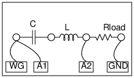

Schematic

Instructions
- Make connections as shown. The picture shows an LC filter with a load resistor.
- You may use any other type of filter.
- We apply a sine wave of a given frequency at the input of the filter and the same is measured by A1.
- The output of the filter is measured by A2 and the ratio of amplitudes (the gain) is calculated.
- This process is repeated for a range of frequencies and gain is plotted as a function of frequency.
- To start with try C = 1uF, L = 1mH, R = 1000 Ohm, Calculate f0 = 1/(2*pi*sqrt(L*C))
- Try parallel and series LC combinations.